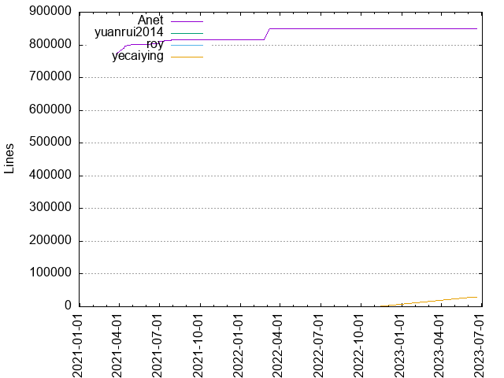
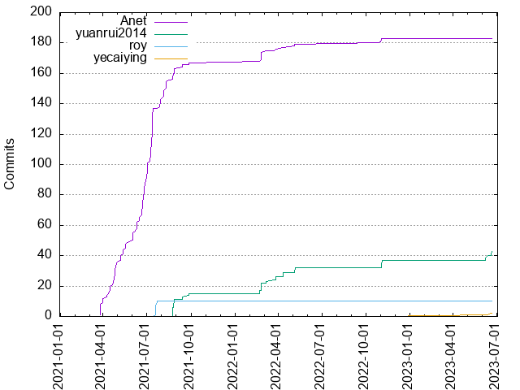

Authors
| Author | Commits (%) | + lines | - lines | First commit | Last commit | Age | Active days | # by commits |
|---|
| Anet | 183 (76.57%) | 849101 | 789744 | 2021-03-26 | 2022-11-03 | 587 days, 7:01:33 | 71 | 1 |
| yuanrui2014 | 43 (17.99%) | 18 | 7 | 2021-08-24 | 2023-06-21 | 665 days, 19:39:15 | 25 | 2 |
| roy | 10 (4.18%) | 60 | 45 | 2021-07-19 | 2021-07-23 | 4 days, 2:15:37 | 4 | 3 |
| yecaiying | 2 (0.84%) | 28900 | 15855 | 2023-06-07 | 2023-06-19 | 11 days, 18:47:23 | 2 | 4 |


| Month | Author | Commits (%) | Next top 5 | Number of authors |
|---|
| 2023-06 | yuanrui2014 | 6 (75.00% of 8) | yecaiying | 2 |
| 2022-11 | yuanrui2014 | 5 (62.50% of 8) | Anet | 2 |
| 2022-10 | Anet | 1 (100.00% of 1) | | 1 |
| 2022-05 | yuanrui2014 | 3 (60.00% of 5) | Anet | 2 |
| 2022-04 | yuanrui2014 | 3 (75.00% of 4) | Anet | 2 |
| 2022-03 | yuanrui2014 | 4 (66.67% of 6) | Anet | 2 |
| 2022-02 | yuanrui2014 | 7 (50.00% of 14) | Anet | 2 |
| 2021-09 | yuanrui2014 | 4 (50.00% of 8) | Anet | 2 |
| 2021-08 | Anet | 20 (64.52% of 31) | yuanrui2014 | 2 |
| 2021-07 | Anet | 50 (83.33% of 60) | roy | 2 |
| 2021-06 | Anet | 44 (100.00% of 44) | | 1 |
| 2021-05 | Anet | 13 (100.00% of 13) | | 1 |
| 2021-04 | Anet | 28 (96.55% of 29) | 叶才英 | 2 |
| 2021-03 | Anet | 8 (100.00% of 8) | | 1 |
| Year | Author | Commits (%) | Next top 5 | Number of authors |
|---|
| 2023 | yuanrui2014 | 6 (75.00% of 8) | yecaiying | 2 |
| 2022 | yuanrui2014 | 22 (57.89% of 38) | Anet | 2 |
| 2021 | Anet | 167 (86.53% of 193) | yuanrui2014, roy, 叶才英 | 4 |
| Domains | Total (%) |
|---|
| qq.com | 194 (81.17%) |
|---|
| users.noreply.github.com | 43 (17.99%) |
|---|
| nekeck.com | 2 (0.84%) |
|---|